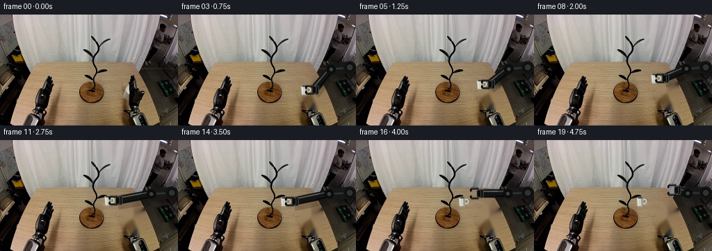
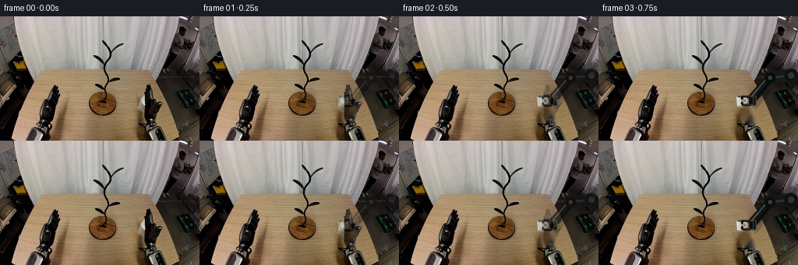
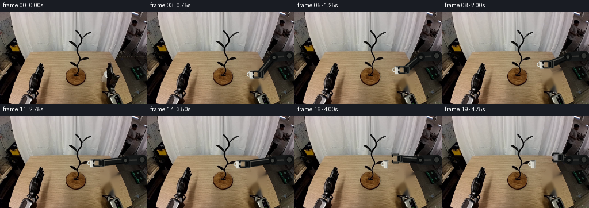

CODING AGENTS AS PIXEL WORLD MODELS
traex/GPT-5.6-Sol · common50_0032
点击播放 · 原生 RGB 像素
逐轮保存的候选
回放视频、检查图与代码变化。
每份候选均可单独播放。实际图片检查记录在下方工具轨迹中。
候选 01播放与检查图
点击播放 · 原生 RGB 像素


展开代码变化
--- 上一保存版本
+++ 本次保存版本
@@ -0,0 +1,224 @@
+from pathlib import Path
+import math
+import numpy as np
+import cv2
+from PIL import Image, ImageDraw, ImageFilter
+import artifact_io
+
+# PixelWorld deterministic local renderer for a fixed-view pick-and-place action.
+CASE_DIR = Path(__file__).resolve().parent
+W, H = 256, 160
+SCALE = 4
+
+
+def smoothstep(t):
+ t = float(np.clip(t, 0.0, 1.0))
+ return t * t * (3.0 - 2.0 * t)
+
+
+def lerp(a, b, t):
+ t = smoothstep(t)
+ return (a[0] * (1-t) + b[0] * t, a[1] * (1-t) + b[1] * t)
+
+
+def path_position(frame):
+ """Mug center: brief grasp, vertical clearance, transfer, and hook seating."""
+ if frame <= 3:
+ return (182.0, 109.0)
+ if frame <= 7: # clear the tabletop first
+ return lerp((182,109), (176,93), (frame-3)/4)
+ if frame <= 12: # then move to the stand hook
+ return lerp((176,93), (153,87), (frame-7)/5)
+ if frame <= 14: # controlled two-pixel seating motion
+ return lerp((153,87), (153,89), (frame-12)/2)
+ return (153.0, 89.0)
+
+
+def wrist_position(frame, mug_xy):
+ if frame <= 14:
+ # Wrist is always a rigid, fixed offset from the grasped mug.
+ approach = smoothstep(min(frame, 3) / 3.0)
+ return (mug_xy[0] + 15.0 - 2.0*approach, mug_xy[1] - 0.5)
+ # Open and withdraw up/right without moving the released mug.
+ if frame <= 16:
+ return lerp((166,88.5), (176,77), (frame-14)/2)
+ return lerp((176,77), (204,72), (frame-16)/3)
+
+
+def aa_layer():
+ return Image.new("RGBA", (W*SCALE, H*SCALE), (0,0,0,0))
+
+
+def pxy(p):
+ return tuple(int(round(v*SCALE)) for v in p)
+
+
+def line(draw, points, fill, width, joint="curve"):
+ draw.line([pxy(p) for p in points], fill=fill, width=max(1,int(round(width*SCALE))), joint=joint)
+
+
+def ellipse(draw, box, fill=None, outline=None, width=1):
+ draw.ellipse(tuple(int(round(v*SCALE)) for v in box), fill=fill, outline=outline,
+ width=max(1,int(round(width*SCALE))))
+
+
+def polygon(draw, points, fill):
+ draw.polygon([pxy(p) for p in points], fill=fill)
+
+
+def rounded(draw, box, radius, fill, outline=None, width=1):
+ draw.rounded_rectangle(tuple(int(round(v*SCALE)) for v in box), radius=int(radius*SCALE),
+ fill=fill, outline=outline, width=max(1,int(width*SCALE)))
+
+
+def composite_aa(base, layer):
+ layer = layer.resize((W,H), Image.Resampling.LANCZOS)
+ return Image.alpha_composite(base.convert("RGBA"), layer)
+
+
+def make_clean_plate(source):
+ """Remove the initial mug/end-effector while retaining the stand and large arm base."""
+ bgr = cv2.cvtColor(source, cv2.COLOR_RGB2BGR)
+ mask = np.zeros((H,W), np.uint8)
+ # The narrow tool and mug immediately left of the right arm.
+ poly = np.array([[174,98],[181,98],[183,88],[191,86],[198,89],[201,96],
+ [207,99],[207,132],[200,137],[188,136],[184,126],[176,124]], np.int32)
+ cv2.fillPoly(mask, [poly], 255)
+ # Retain a hard attachment at x>=207; feather the removal boundary slightly.
+ mask = cv2.dilate(mask, np.ones((3,3),np.uint8), iterations=1)
+ clean = cv2.inpaint(bgr, mask, 5, cv2.INPAINT_TELEA)
+ return cv2.cvtColor(clean, cv2.COLOR_BGR2RGB)
+
+
+def draw_shadow(base, frame, mug_xy):
+ if frame >= 15:
+ return base
+ lift = max(0.0, 109.0-mug_xy[1])
+ opacity = int(max(6, 42 - lift*1.45))
+ spread = 6.0 + lift*.12
+ layer = aa_layer(); d = ImageDraw.Draw(layer)
+ # Perspective projection stays beneath the carried object on the wood surface.
+ sx = mug_xy[0] + (mug_xy[0]-182)*0.05
+ sy = 119.2 + lift*.08
+ ellipse(d, (sx-spread, sy-1.5, sx+spread, sy+1.7), fill=(20,13,8,opacity))
+ layer = layer.filter(ImageFilter.GaussianBlur(1.15*SCALE))
+ return composite_aa(base, layer)
+
+
+def draw_arm(base, wrist, frame):
+ """Render a stable two-link dark industrial arm attached to the existing right base."""
+ layer = aa_layer(); d = ImageDraw.Draw(layer)
+ shoulder = (247.0, 76.0)
+ # An elbow constrained to a small, plausible arc while the wrist translates.
+ wx, wy = wrist
+ elbow = (220.0 + 0.10*(wx-194), 79.0 - 0.06*(109-wy))
+
+ # Soft contact shadow under the low forearm, strongest near the initial pose.
+ if wy > 87:
+ line(d, [(shoulder[0]+1,shoulder[1]+5),(elbow[0]+1,elbow[1]+6),(wx+1,wy+6)],
+ (8,5,4,48), 16)
+
+ # Rear upper link, joint collars, and the moving forearm. Colors are sampled to
+ # fit the nearly-black arm already present in the source photograph.
+ line(d, [shoulder, elbow], (22,24,24,255), 17)
+ line(d, [shoulder, elbow], (52,54,51,210), 3.0)
+ line(d, [elbow, wrist], (18,20,20,255), 12.5)
+ # Rigid steel edge catches the workspace light.
+ line(d, [(elbow[0]-1,elbow[1]-3),(wx-1,wy-3)], (78,80,75,205), 2.0)
+ line(d, [(elbow[0]+1,elbow[1]+4),(wx+1,wy+4)], (3,4,4,235), 2.0)
+ ellipse(d, (shoulder[0]-9,shoulder[1]-9,shoulder[0]+9,shoulder[1]+9), fill=(17,19,19,255))
+ ellipse(d, (shoulder[0]-5.5,shoulder[1]-5.5,shoulder[0]+5.5,shoulder[1]+5.5),
+ fill=(48,50,47,255), outline=(8,9,9,255), width=1.2)
+ ellipse(d, (elbow[0]-7,elbow[1]-7,elbow[0]+7,elbow[1]+7), fill=(12,14,14,255))
+ ellipse(d, (elbow[0]-3.7,elbow[1]-3.7,elbow[0]+3.7,elbow[1]+3.7),
+ fill=(60,62,58,255), outline=(5,6,6,255), width=1)
+ # Short wrist block; jaws are rendered later so they properly occlude the mug.
+ rounded(d, (wx-1.5,wy-6.5,wx+7.5,wy+6.5), 2.1, (15,17,17,255), (72,73,68,255), 1)
+ return composite_aa(base, layer)
+
+
+def draw_mug(base, center, frame):
+ """Small rigid white ceramic mug, kept upright throughout transport."""
+ cx, cy = center
+ layer = aa_layer(); d = ImageDraw.Draw(layer)
+ # Handle is behind the cup body; a C-shaped ceramic ring leaves the scene visible.
+ # Slightly darker lower stroke communicates depth at this small image scale.
+ ellipse(d, (cx+2.5,cy-4.3,cx+9.0,cy+3.3), outline=(202,202,193,255), width=2.2)
+ ellipse(d, (cx+3.8,cy-2.8,cx+7.5,cy+1.8), outline=(126,125,118,180), width=.7)
+
+ # Tapered body with a shaded right side and bright left ceramic highlight.
+ body = [(cx-5.2,cy-6.2),(cx+4.2,cy-6.2),(cx+3.2,cy+7.1),(cx-3.9,cy+7.1)]
+ polygon(d, body, (205,205,197,255))
+ polygon(d, [(cx+1.0,cy-5.8),(cx+4.1,cy-5.8),(cx+3.2,cy+6.8),(cx+1.4,cy+7.0)],
+ (157,157,150,210))
+ polygon(d, [(cx-4.6,cy-5.3),(cx-2.4,cy-5.5),(cx-2.0,cy+5.8),(cx-3.5,cy+6.2)],
+ (232,232,222,225))
+ # Rim and dark coffee/interior make the silhouette legible.
+ ellipse(d, (cx-5.3,cy-7.4,cx+4.4,cy-4.8), fill=(226,226,218,255), outline=(120,121,117,255), width=.7)
+ ellipse(d, (cx-3.9,cy-6.8,cx+3.3,cy-5.3), fill=(70,62,53,255))
+ line(d, [(cx-3.7,cy+6.4),(cx+2.9,cy+6.4)], (133,133,127,210), .8)
+ return composite_aa(base, layer)
+
+
+def jaw_gap(frame):
+ if frame <= 1: return 5.2 - 0.3*frame
+ if frame <= 3: return 4.9 - 1.55*(frame-1)
+ if frame <= 14: return 1.8
+ if frame == 15: return 4.0
+ return 6.0
+
+
+def draw_gripper(base, wrist, frame):
+ """Parallel-jaw right gripper, grasping the mug without deforming it."""
+ wx, wy = wrist; gap = jaw_gap(frame)
+ layer = aa_layer(); d = ImageDraw.Draw(layer)
+ # Rotationally fixed palm.
+ rounded(d, (wx-2.5,wy-5.2,wx+3.8,wy+5.2), 1.5, (10,12,12,255), (83,84,78,255), .8)
+ # Each finger has a proximal bar and a short inward tip. During grasp the tips
+ # touch the mug's top/bottom edges; opening is symmetric and stable.
+ upper_y = wy - (5.0 + gap*.34)
+ lower_y = wy + (5.0 + gap*.34)
+ # proximal rails
+ line(d, [(wx,upper_y),(wx-10.2,upper_y)], (22,24,24,255), 3.0)
+ line(d, [(wx,lower_y),(wx-10.2,lower_y)], (19,21,21,255), 3.0)
+ line(d, [(wx-10.1,upper_y),(wx-11.4,upper_y+2.7)], (13,15,15,255), 2.7)
+ line(d, [(wx-10.1,lower_y),(wx-11.4,lower_y-2.7)], (13,15,15,255), 2.7)
+ # Narrow silver edge and black rubber pads.
+ line(d, [(wx-1,upper_y-.8),(wx-9.4,upper_y-.8)], (90,92,86,220), .75)
+ line(d, [(wx-1,lower_y-.8),(wx-9.4,lower_y-.8)], (68,70,66,190), .65)
+ rounded(d, (wx-12.0,upper_y+1.1,wx-9.8,upper_y+4.0), .5, (2,3,3,255))
+ rounded(d, (wx-12.0,lower_y-4.0,wx-9.8,lower_y-1.1), .5, (2,3,3,255))
+ return composite_aa(base, layer)
+
+
+def render():
+ source = np.asarray(Image.open(CASE_DIR / "first_frame.png").convert("RGB"), dtype=np.uint8)
+ assert source.shape == (H,W,3)
+ clean = make_clean_plate(source)
+ frames = [source.copy()]
+
+ for f in range(1,20):
+ mug = path_position(f)
+ wrist = wrist_position(f, mug)
+ base = Image.fromarray(clean).convert("RGBA")
+ base = draw_shadow(base, f, mug)
+ base = draw_arm(base, wrist, f)
+ # Mug remains where placed while the opened gripper withdraws.
+ base = draw_mug(base, mug, f)
+ base = draw_gripper(base, wrist, f)
+ arr = np.asarray(base.convert("RGB"), dtype=np.uint8)
+
+ # A two-frame optical handoff from the exact source prevents a synthetic pop;
+ # thereafter all motion is crisp and entirely generated from the clean plate.
+ if f == 1:
+ a = 0.38
+ arr = np.clip(source.astype(np.float32)*(1-a) + arr.astype(np.float32)*a,0,255).astype(np.uint8)
+ elif f == 2:
+ a = 0.75
+ arr = np.clip(source.astype(np.float32)*(1-a) + arr.astype(np.float32)*a,0,255).astype(np.uint8)
+ frames.append(arr)
+ return np.stack(frames).astype(np.uint8)
+
+
+if __name__ == "__main__":
+ artifact_io.save(render(), CASE_DIR)
候选 02播放与检查图
点击播放 · 原生 RGB 像素

展开代码变化
--- 上一保存版本
+++ 本次保存版本
@@ -28,10 +28,10 @@
if frame <= 7: # clear the tabletop first
return lerp((182,109), (176,93), (frame-3)/4)
if frame <= 12: # then move to the stand hook
- return lerp((176,93), (153,87), (frame-7)/5)
- if frame <= 14: # controlled two-pixel seating motion
- return lerp((153,87), (153,89), (frame-12)/2)
- return (153.0, 89.0)
+ return lerp((176,93), (159,81), (frame-7)/5)
+ if frame <= 14: # controlled three-pixel seating motion
+ return lerp((159,81), (159,84), (frame-12)/2)
+ return (159.0, 84.0)
def wrist_position(frame, mug_xy):
@@ -41,8 +41,8 @@
return (mug_xy[0] + 15.0 - 2.0*approach, mug_xy[1] - 0.5)
# Open and withdraw up/right without moving the released mug.
if frame <= 16:
- return lerp((166,88.5), (176,77), (frame-14)/2)
- return lerp((176,77), (204,72), (frame-16)/3)
+ return lerp((172,83.5), (181,74), (frame-14)/2)
+ return lerp((181,74), (204,72), (frame-16)/3)
def aa_layer():
@@ -141,10 +141,11 @@
"""Small rigid white ceramic mug, kept upright throughout transport."""
cx, cy = center
layer = aa_layer(); d = ImageDraw.Draw(layer)
- # Handle is behind the cup body; a C-shaped ceramic ring leaves the scene visible.
+ # Handle is behind and to the left of the body. At placement, the right-facing
+ # stand hook remains visible through this C-shaped ring.
# Slightly darker lower stroke communicates depth at this small image scale.
- ellipse(d, (cx+2.5,cy-4.3,cx+9.0,cy+3.3), outline=(202,202,193,255), width=2.2)
- ellipse(d, (cx+3.8,cy-2.8,cx+7.5,cy+1.8), outline=(126,125,118,180), width=.7)
+ ellipse(d, (cx-9.0,cy-4.3,cx-2.5,cy+3.3), outline=(202,202,193,255), width=2.2)
+ ellipse(d, (cx-7.5,cy-2.8,cx-3.8,cy+1.8), outline=(126,125,118,180), width=.7)
# Tapered body with a shaded right side and bright left ceramic highlight.
body = [(cx-5.2,cy-6.2),(cx+4.2,cy-6.2),(cx+3.2,cy+7.1),(cx-3.9,cy+7.1)]
可观测工具轨迹
实际执行的命令与返回图片。
命令 1exit 0
/bin/bash -lc "cat GENERATION_RULES.md && printf '\\n--- PROMPT ---\\n' && cat prompt.txt"
命令 2exit 0
/bin/bash -lc "find . -maxdepth 2 -type f -printf '%p %s bytes\\n' | sort && printf '\\n--- TOOLING ---\\n' && (command -v ffmpeg || true) && (command -v python3 || true)"
命令 3exit 0
/bin/bash -lc "cat task_spec.json && sed -n '1,240p' artifact_io.py"
命令 4exit 0
/bin/bash -lc "python3 - <<'PY'
from PIL import Image
import numpy as np
im=np.array(Image.open('first_frame.png').convert('RGB'))
print(im.shape, im.dtype, im.min(), im.max())
for y,x in [(0,0),(80,128),(159,255),(120,128),(100,60),(100,200)]:print((x,y), im[y,x])
# coarse cell medians and symbol based on HSV-ish/manual nearest prototypes
from collections import Counter
q=(im//32)*32
print('top quantized colors')
for c,n in Counter(map(tuple,q.reshape(-1,3))).most_common(25):print(c,n)
PY"命令 5exit 0
/bin/bash -lc "python3 - <<'PY' mods=['cv2','scipy','skimage','imageio'] for m in mods: try: x=__import__(m); print(m,'ok',getattr(x,'__version__','')) except Exception as e: print(m,'NO',e) PY"
命令 6exit 2
/bin/bash -lc "cat > /tmp/analyze.py <<'PY'
import cv2, numpy as np
from PIL import Image
im=cv2.imread('first_frame.png'); rgb=im[:,:,::-1]; hsv=cv2.cvtColor(im,cv2.COLOR_BGR2HSV)
gray=cv2.cvtColor(im,cv2.COLOR_BGR2GRAY)
# masks
masks={
'bright_neutral':(hsv[:,:,1]<50)&(hsv[:,:,2]>160),
'white':(hsv[:,:,1]<35)&(hsv[:,:,2]>185),
'dark':gray<45,
'black':gray<25,
'gray':(hsv[:,:,1]<35)&(hsv[:,:,2]>50)&(hsv[:,:,2]<180),
'wood':(hsv[:,:,0]>5)&(hsv[:,:,0]<25)&(hsv[:,:,1]>45)&(hsv[:,:,2]>80),
}
for name,m in masks.items():
n, lab, st, cen=cv2.connectedComponentsWithStats(m.astype('uint8'),8)
print('\\n',name,'count',m.sum())
comps=[]
for i in range(1,n):
x,y,w,h,a=st[i];
if a>=8: comps.append((a,(x,y,w,h),tuple(np.round(cen[i],1))))
print(*sorted(comps,reverse=True)[:30],sep='\\n')
# ASCII 4x4 cells classification mean RGB + dark proportion + whiteness
chars=[]
for y in range(0,160,4):
row=''
for x in range(0,256,4):
p=rgb[y:y+4,x:x+4]; ph=hsv[y:y+4,x:x+4]; g=gray[y:y+4,x:x+4]
# classify by med hsv and fractions
H,S,V=np.median(ph.reshape(-1,3),axis=0)
if (g<25).mean()>.5: c='#'
elif (g<55).mean()>.5:c='@'
elif S<35 and V>195:c='W'
elif S<45 and V>155:c='w'
elif S<45 and V<120:c='g'
elif S<55:c='G'
elif 5<H<27 and S>45 and V>100:c='t' # wood/tan
elif V<90:c='d'
elif V<140:c='m'
else:c='.'
row+=c
chars.append(row)
print('\\nASCII each 4px x/y')
print(' '+''.join(str(i//10%10) for i in range(64)))
print(' '+''.join(str(i%10) for i in range(64)))
for i,r in enumerate(chars):print(f'{i:02d} {r}')
# edges contour larger
ed=cv2.Canny(gray,50,120)
cts,_=cv2.findContours(ed,cv2.RETR_LIST,cv2.CHAIN_APPROX_SIMPLE)
items=[]
for c in cts:
x,y,w,h=cv2.boundingRect(c); a=cv2.contourArea(c); L=cv2.arcLength(c,False)
if w*h>20: items.append((round(a,1),round(L,1),(x,y,w,h)))
print('\\ncontours',*sorted(items,reverse=True)[:50],sep='\\n')
PY
python3 /tmp/analyze.py"命令 7exit 0
/bin/bash -lc "cat > .tmp/analyze.py <<'PY'
import cv2, numpy as np
from PIL import Image
im=cv2.imread('first_frame.png'); rgb=im[:,:,::-1]; hsv=cv2.cvtColor(im,cv2.COLOR_BGR2HSV)
gray=cv2.cvtColor(im,cv2.COLOR_BGR2GRAY)
masks={
'bright_neutral':(hsv[:,:,1]<50)&(hsv[:,:,2]>160),
'white':(hsv[:,:,1]<35)&(hsv[:,:,2]>185),
'dark':gray<45,
'black':gray<25,
'gray':(hsv[:,:,1]<35)&(hsv[:,:,2]>50)&(hsv[:,:,2]<180),
'wood':(hsv[:,:,0]>5)&(hsv[:,:,0]<25)&(hsv[:,:,1]>45)&(hsv[:,:,2]>80),
}
for name,m in masks.items():
n, lab, st, cen=cv2.connectedComponentsWithStats(m.astype('uint8'),8)
print('\\n',name,'count',m.sum())
comps=[]
for i in range(1,n):
x,y,w,h,a=st[i];
if a>=8: comps.append((a,(x,y,w,h),tuple(np.round(cen[i],1))))
print(*sorted(comps,reverse=True)[:30],sep='\\n')
chars=[]
for y in range(0,160,4):
row=''
for x in range(0,256,4):
ph=hsv[y:y+4,x:x+4]; g=gray[y:y+4,x:x+4]
H,S,V=np.median(ph.reshape(-1,3),axis=0)
if (g<25).mean()>.5: c='#'
elif (g<55).mean()>.5:c='@'
elif S<35 and V>195:c='W'
elif S<45 and V>155:c='w'
elif S<45 and V<120:c='g'
elif S<55:c='G'
elif 5<H<27 and S>45 and V>100:c='t'
elif V<90:c='d'
elif V<140:c='m'
else:c='.'
row+=c
chars.append(row)
print('\\nASCII each 4px x/y')
print(' '+''.join(str(i//10%10) for i in range(64)))
print(' '+''.join(str(i%10) for i in range(64)))
for i,r in enumerate(chars):print(f'{i:02d} {r}')
ed=cv2.Canny(gray,50,120)
cts,_=cv2.findContours(ed,cv2.RETR_LIST,cv2.CHAIN_APPROX_SIMPLE)
items=[]
for c in cts:
x,y,w,h=cv2.boundingRect(c); a=cv2.contourArea(c); L=cv2.arcLength(c,False)
if w*h>20: items.append((round(a,1),round(L,1),(x,y,w,h)))
print('\\ncontours',*sorted(items,reverse=True)[:50],sep='\\n')
PY
python3 .tmp/analyze.py"命令 8exit 0
/bin/bash -lc "python3 - <<'PY'
import cv2,numpy as np
im=cv2.imread('first_frame.png'); hsv=cv2.cvtColor(im,cv2.COLOR_BGR2HSV); rgb=im[:,:,::-1]; gray=cv2.cvtColor(im,cv2.COLOR_BGR2GRAY)
for sat in [40,60,80,100,130]:
for val in [120,140,160,180]:
m=(hsv[:,:,1]<sat)&(hsv[:,:,2]>val);m[:68]=0
n,l,st,ce=cv2.connectedComponentsWithStats(m.astype('uint8'),8)
cc=[]
for i in range(1,n):
x,y,w,h,a=st[i]
if a>=10:cc.append((a,(x,y,w,h),np.round(ce[i],1)))
print('S',sat,'V',val,'n',m.sum(),'comps',sorted(cc,reverse=True)[:12])
# print 2x2 chars for x90:165 y70:140 and x160:220
# classify using brightness relative wood, exact RGB medians
for name,box in [('center',(90,65,170,140)),('right',(160,65,225,140)),('left',(30,65,90,140))]:
x0,y0,x1,y1=box; print('\\n',name,box)
for y in range(y0,y1,2):
s=''
for x in range(x0,x1,2):
p=rgb[y:y+2,x:x+2].mean((0,1)); R,G,B=p; mx=max(p);mn=min(p); v=(R+G+B)/3
if v<20:c='#'
elif v<45:c='@'
elif v<75:c='d'
elif mx-mn<15 and v>185:c='W'
elif mx-mn<20 and v>140:c='w'
elif mx-mn<25 and v>90:c='g'
elif B>R*1.1:c='b'
elif R>G*1.15 and G>B*1.15 and v>105:c='T'
elif R>G*1.15 and G>B*1.1:c='t'
elif v>150:c='L'
elif v>105:c='m'
else:c='.'
s+=c
print(f'{y:03d} {s}')
PY"命令 9exit 0
/bin/bash -lc "python3 - <<'PY'
import cv2,numpy as np
im=cv2.imread('first_frame.png'); g=cv2.cvtColor(im,cv2.COLOR_BGR2GRAY); hsv=cv2.cvtColor(im,cv2.COLOR_BGR2HSV)
for th in [25,45,70,95]:
print('\\nDARK',th)
m=g<th
for y in range(0,160,4):
mm=m[y:y+4].mean(0)>.5
# intervals len>=2
d=np.diff(np.r_[False,mm,False].astype(int)); ss=np.where(d==1)[0];ee=np.where(d==-1)[0]
ints=[(a,b-1) for a,b in zip(ss,ee) if b-a>=2]
if ints: print(f'{y:03d}',ints)
print('\\nBright low saturation y>=68 intervals by rows')
m=(hsv[:,:,1]<55)&(hsv[:,:,2]>140)
for y in range(68,160,2):
mm=m[y:y+2].mean(0)>.25
d=np.diff(np.r_[False,mm,False].astype(int)); ss=np.where(d==1)[0];ee=np.where(d==-1)[0]
ints=[(a,b-1) for a,b in zip(ss,ee) if b-a>=2]
if ints: print(f'{y:03d}',ints)
# Center color clusters via kmeans for lower image, output centers + spatial bbox/count
Z=im[68:].reshape(-1,3).astype(np.float32)
crit=(cv2.TERM_CRITERIA_EPS+cv2.TERM_CRITERIA_MAX_ITER,100,.1)
_,lab,cen=cv2.kmeans(Z,12,None,crit,10,cv2.KMEANS_PP_CENTERS)
lab=lab.reshape(92,256)
for k,c in sorted(enumerate(cen), key=lambda x:sum(x[1])):
ys,xs=np.where(lab==k); print(k,'BGR',np.round(c).astype(int),'n',len(xs),'bbox',(xs.min(),ys.min()+68,xs.max(),ys.max()+68),'meanxy',np.round([xs.mean(),ys.mean()+68],1))
PY"命令 10exit 0
/bin/bash -lc "python3 - <<'PY'
import cv2,numpy as np
im=cv2.imread('first_frame.png'); rgb=im[:,:,::-1]; hsv=cv2.cvtColor(im,cv2.COLOR_BGR2HSV); g=cv2.cvtColor(im,cv2.COLOR_BGR2GRAY)
# one char per px x ranges
for box in [(100,25,165,130),(160,85,215,135),(30,80,90,140)]:
x0,y0,x1,y1=box; print('\\nBOX',box, 'x mod tens'); print(' '+''.join(str(x//10%10) for x in range(x0,x1))); print(' '+''.join(str(x%10) for x in range(x0,x1)))
for y in range(y0,y1):
s=''
for x in range(x0,x1):
R,G,B=rgb[y,x];H,S,V=hsv[y,x];v=g[y,x]
if v<20:c='#'
elif v<45:c='@'
elif v<75:c='d'
elif S<30 and V>190:c='W'
elif S<45 and V>150:c='w'
elif S<50 and V>100:c='g'
elif H<25 and S>80 and V>140:c='T'
elif H<25 and S>70:c='t'
elif V>160:c='L'
elif V>120:c='m'
elif V>80:c='.'
else:c='-'
s+=c
print(f'{y:03d}{s}')
# summarize columns region mug suspect
print('\\nValues suspect representative rows RGB')
for y in range(95,126,5):
print('y',y,[(x,tuple(rgb[y,x])) for x in range(172,202,3)])
PY"命令 11exit 0
/bin/bash -lc "python3 - <<'PY'
import cv2,numpy as np
im=cv2.imread('first_frame.png'); g=cv2.cvtColor(im,cv2.COLOR_BGR2GRAY)
# right region analyze dark pixels per row intervals and center
m=(g<60).astype(np.uint8); m[:,:170]=0
# components skeleton-ish coords by y
for y in range(0,160,2):
xs=np.where(m[y:y+2].max(0)>0)[0]
# intervals >=1
d=np.diff(np.r_[False,np.isin(np.arange(256),xs),False].astype(int)); ss=np.where(d==1)[0];ee=np.where(d==-1)[0]
ints=[(a,b-1) for a,b in zip(ss,ee) if b-a>=2]
print(f'{y:03d}',ints)
# distance transform local maxima each y for right object after x198
for th in [35,60,90]:
mm=(g<th).astype(np.uint8); dist=cv2.distanceTransform(mm,cv2.DIST_L2,5)
print('\\nth',th,'maxima rows')
for y in range(0,160,5):
vals=dist[y:y+5,170:]; idx=np.unravel_index(vals.argmax(),vals.shape); v=vals[idx]
if v>1:print(y,(170+idx[1],y+idx[0],round(float(v),1)))
PY"命令 12exit 0
/bin/bash -lc "cat > generate.py <<'PY'
from pathlib import Path
import math
import numpy as np
import cv2
from PIL import Image, ImageDraw, ImageFilter
import artifact_io
# PixelWorld deterministic local renderer for a fixed-view pick-and-place action.
CASE_DIR = Path(__file__).resolve().parent
W, H = 256, 160
SCALE = 4
def smoothstep(t):
t = float(np.clip(t, 0.0, 1.0))
return t * t * (3.0 - 2.0 * t)
def lerp(a, b, t):
t = smoothstep(t)
return (a[0] * (1-t) + b[0] * t, a[1] * (1-t) + b[1] * t)
def path_position(frame):
\"\"\"Mug center: brief grasp, vertical clearance, transfer, and hook seating.\"\"\"
if frame <= 3:
return (182.0, 109.0)
if frame <= 7: # clear the tabletop first
return lerp((182,109), (176,93), (frame-3)/4)
if frame <= 12: # then move to the stand hook
return lerp((176,93), (153,87), (frame-7)/5)
if frame <= 14: # controlled two-pixel seating motion
return lerp((153,87), (153,89), (frame-12)/2)
return (153.0, 89.0)
def wrist_position(frame, mug_xy):
if frame <= 14:
# Wrist is always a rigid, fixed offset from the grasped mug.
approach = smoothstep(min(frame, 3) / 3.0)
return (mug_xy[0] + 15.0 - 2.0*approach, mug_xy[1] - 0.5)
# Open and withdraw up/right without moving the released mug.
if frame <= 16:
return lerp((166,88.5), (176,77), (frame-14)/2)
return lerp((176,77), (204,72), (frame-16)/3)
def aa_layer():
return Image.new(\"RGBA\", (W*SCALE, H*SCALE), (0,0,0,0))
def pxy(p):
return tuple(int(round(v*SCALE)) for v in p)
def line(draw, points, fill, width, joint=\"curve\"):
draw.line([pxy(p) for p in points], fill=fill, width=max(1,int(round(width*SCALE))), joint=joint)
def ellipse(draw, box, fill=None, outline=None, width=1):
draw.ellipse(tuple(int(round(v*SCALE)) for v in box), fill=fill, outline=outline,
width=max(1,int(round(width*SCALE))))
def polygon(draw, points, fill):
draw.polygon([pxy(p) for p in points], fill=fill)
def rounded(draw, box, radius, fill, outline=None, width=1):
draw.rounded_rectangle(tuple(int(round(v*SCALE)) for v in box), radius=int(radius*SCALE),
fill=fill, outline=outline, width=max(1,int(width*SCALE)))
def composite_aa(base, layer):
layer = layer.resize((W,H), Image.Resampling.LANCZOS)
return Image.alpha_composite(base.convert(\"RGBA\"), layer)
def make_clean_plate(source):
\"\"\"Remove the initial mug/end-effector while retaining the stand and large arm base.\"\"\"
bgr = cv2.cvtColor(source, cv2.COLOR_RGB2BGR)
mask = np.zeros((H,W), np.uint8)
# The narrow tool and mug immediately left of the right arm.
poly = np.array([[174,98],[181,98],[183,88],[191,86],[198,89],[201,96],
[207,99],[207,132],[200,137],[188,136],[184,126],[176,124]], np.int32)
cv2.fillPoly(mask, [poly], 255)
# Retain a hard attachment at x>=207; feather the removal boundary slightly.
mask = cv2.dilate(mask, np.ones((3,3),np.uint8), iterations=1)
clean = cv2.inpaint(bgr, mask, 5, cv2.INPAINT_TELEA)
return cv2.cvtColor(clean, cv2.COLOR_BGR2RGB)
def draw_shadow(base, frame, mug_xy):
if frame >= 15:
return base
lift = max(0.0, 109.0-mug_xy[1])
opacity = int(max(6, 42 - lift*1.45))
spread = 6.0 + lift*.12
layer = aa_layer(); d = ImageDraw.Draw(layer)
# Perspective projection stays beneath the carried object on the wood surface.
sx = mug_xy[0] + (mug_xy[0]-182)*0.05
sy = 119.2 + lift*.08
ellipse(d, (sx-spread, sy-1.5, sx+spread, sy+1.7), fill=(20,13,8,opacity))
layer = layer.filter(ImageFilter.GaussianBlur(1.15*SCALE))
return composite_aa(base, layer)
def draw_arm(base, wrist, frame):
\"\"\"Render a stable two-link dark industrial arm attached to the existing right base.\"\"\"
layer = aa_layer(); d = ImageDraw.Draw(layer)
shoulder = (247.0, 76.0)
# An elbow constrained to a small, plausible arc while the wrist translates.
wx, wy = wrist
elbow = (220.0 + 0.10*(wx-194), 79.0 - 0.06*(109-wy))
# Soft contact shadow under the low forearm, strongest near the initial pose.
if wy > 87:
line(d, [(shoulder[0]+1,shoulder[1]+5),(elbow[0]+1,elbow[1]+6),(wx+1,wy+6)],
(8,5,4,48), 16)
# Rear upper link, joint collars, and the moving forearm. Colors are sampled to
# fit the nearly-black arm already present in the source photograph.
line(d, [shoulder, elbow], (22,24,24,255), 17)
line(d, [shoulder, elbow], (52,54,51,210), 3.0)
line(d, [elbow, wrist], (18,20,20,255), 12.5)
# Rigid steel edge catches the workspace light.
line(d, [(elbow[0]-1,elbow[1]-3),(wx-1,wy-3)], (78,80,75,205), 2.0)
line(d, [(elbow[0]+1,elbow[1]+4),(wx+1,wy+4)], (3,4,4,235), 2.0)
ellipse(d, (shoulder[0]-9,shoulder[1]-9,shoulder[0]+9,shoulder[1]+9), fill=(17,19,19,255))
ellipse(d, (shoulder[0]-5.5,shoulder[1]-5.5,shoulder[0]+5.5,shoulder[1]+5.5),
fill=(48,50,47,255), outline=(8,9,9,255), width=1.2)
ellipse(d, (elbow[0]-7,elbow[1]-7,elbow[0]+7,elbow[1]+7), fill=(12,14,14,255))
ellipse(d, (elbow[0]-3.7,elbow[1]-3.7,elbow[0]+3.7,elbow[1]+3.7),
fill=(60,62,58,255), outline=(5,6,6,255), width=1)
# Short wrist block; jaws are rendered later so they properly occlude the mug.
rounded(d, (wx-1.5,wy-6.5,wx+7.5,wy+6.5), 2.1, (15,17,17,255), (72,73,68,255), 1)
return composite_aa(base, layer)
def draw_mug(base, center, frame):
\"\"\"Small rigid white ceramic mug, kept upright throughout transport.\"\"\"
cx, cy = center
layer = aa_layer(); d = ImageDraw.Draw(layer)
# Handle is behind the cup body; a C-shaped ceramic ring leaves the scene visible.
# Slightly darker lower stroke communicates depth at this small image scale.
ellipse(d, (cx+2.5,cy-4.3,cx+9.0,cy+3.3), outline=(202,202,193,255), width=2.2)
ellipse(d, (cx+3.8,cy-2.8,cx+7.5,cy+1.8), outline=(126,125,118,180), width=.7)
# Tapered body with a shaded right side and bright left ceramic highlight.
body = [(cx-5.2,cy-6.2),(cx+4.2,cy-6.2),(cx+3.2,cy+7.1),(cx-3.9,cy+7.1)]
polygon(d, body, (205,205,197,255))
polygon(d, [(cx+1.0,cy-5.8),(cx+4.1,cy-5.8),(cx+3.2,cy+6.8),(cx+1.4,cy+7.0)],
(157,157,150,210))
polygon(d, [(cx-4.6,cy-5.3),(cx-2.4,cy-5.5),(cx-2.0,cy+5.8),(cx-3.5,cy+6.2)],
(232,232,222,225))
# Rim and dark coffee/interior make the silhouette legible.
ellipse(d, (cx-5.3,cy-7.4,cx+4.4,cy-4.8), fill=(226,226,218,255), outline=(120,121,117,255), width=.7)
ellipse(d, (cx-3.9,cy-6.8,cx+3.3,cy-5.3), fill=(70,62,53,255))
line(d, [(cx-3.7,cy+6.4),(cx+2.9,cy+6.4)], (133,133,127,210), .8)
return composite_aa(base, layer)
def jaw_gap(frame):
if frame <= 1: return 5.2 - 0.3*frame
if frame <= 3: return 4.9 - 1.55*(frame-1)
if frame <= 14: return 1.8
if frame == 15: return 4.0
return 6.0
def draw_gripper(base, wrist, frame):
\"\"\"Parallel-jaw right gripper, grasping the mug without deforming it.\"\"\"
wx, wy = wrist; gap = jaw_gap(frame)
layer = aa_layer(); d = ImageDraw.Draw(layer)
# Rotationally fixed palm.
rounded(d, (wx-2.5,wy-5.2,wx+3.8,wy+5.2), 1.5, (10,12,12,255), (83,84,78,255), .8)
# Each finger has a proximal bar and a short inward tip. During grasp the tips
# touch the mug's top/bottom edges; opening is symmetric and stable.
upper_y = wy - (5.0 + gap*.34)
lower_y = wy + (5.0 + gap*.34)
# proximal rails
line(d, [(wx,upper_y),(wx-10.2,upper_y)], (22,24,24,255), 3.0)
line(d, [(wx,lower_y),(wx-10.2,lower_y)], (19,21,21,255), 3.0)
line(d, [(wx-10.1,upper_y),(wx-11.4,upper_y+2.7)], (13,15,15,255), 2.7)
line(d, [(wx-10.1,lower_y),(wx-11.4,lower_y-2.7)], (13,15,15,255), 2.7)
# Narrow silver edge and black rubber pads.
line(d, [(wx-1,upper_y-.8),(wx-9.4,upper_y-.8)], (90,92,86,220), .75)
line(d, [(wx-1,lower_y-.8),(wx-9.4,lower_y-.8)], (68,70,66,190), .65)
rounded(d, (wx-12.0,upper_y+1.1,wx-9.8,upper_y+4.0), .5, (2,3,3,255))
rounded(d, (wx-12.0,lower_y-4.0,wx-9.8,lower_y-1.1), .5, (2,3,3,255))
return composite_aa(base, layer)
def render():
source = np.asarray(Image.open(CASE_DIR / \"first_frame.png\").convert(\"RGB\"), dtype=np.uint8)
assert source.shape == (H,W,3)
clean = make_clean_plate(source)
frames = [source.copy()]
for f in range(1,20):
mug = path_position(f)
wrist = wrist_position(f, mug)
base = Image.fromarray(clean).convert(\"RGBA\")
base = draw_shadow(base, f, mug)
base = draw_arm(base, wrist, f)
# Mug remains where placed while the opened gripper withdraws.
base = draw_mug(base, mug, f)
base = draw_gripper(base, wrist, f)
arr = np.asarray(base.convert(\"RGB\"), dtype=np.uint8)
# A two-frame optical handoff from the exact source prevents a synthetic pop;
# thereafter all motion is crisp and entirely generated from the clean plate.
if f == 1:
a = 0.38
arr = np.clip(source.astype(np.float32)*(1-a) + arr.astype(np.float32)*a,0,255).astype(np.uint8)
elif f == 2:
a = 0.75
arr = np.clip(source.astype(np.float32)*(1-a) + arr.astype(np.float32)*a,0,255).astype(np.uint8)
frames.append(arr)
return np.stack(frames).astype(np.uint8)
if __name__ == \"__main__\":
artifact_io.save(render(), CASE_DIR)
PY
python3 generate.py
python3 - <<'PY'
from PIL import Image
import numpy as np, hashlib, json
src=np.array(Image.open('first_frame.png').convert('RGB'))
z=np.load('pixels.npz')['pixels']
# unpack stored tensor to verify exact first frame and basic dynamics
f=np.stack([((z[:,:,i,None] >> np.array([16,8,0])) & 255).astype(np.uint8) for i in range(z.shape[2])])
print('stored frames',f.shape,f.dtype)
print('frame0 exact',np.array_equal(src,f[0]),hashlib.sha256(f[0].tobytes()).hexdigest()[:16])
for i in range(20):
d=np.abs(f[i].astype(int)-src.astype(int));
print(i,'changed_px',int(np.any(d,2).sum()),'mean_abs',round(float(d.mean()),3),'range',int(f[i].min()),int(f[i].max()))
PY"命令 13exit 0
/bin/bash -lc "python3 - <<'PY'
import cv2,numpy as np
from PIL import Image
src=cv2.imread('first_frame.png'); g=cv2.cvtColor(src,cv2.COLOR_BGR2GRAY)
print('SOURCE central stand dark intervals x105..175')
for y in range(28,132):
m=g[y,105:176]<65
d=np.diff(np.r_[False,m,False].astype(int)); a=np.where(d==1)[0]+105;b=np.where(d==-1)[0]+105
ints=[(int(x),int(z-1)) for x,z in zip(a,b) if z-x>=1]
if ints:print(y,ints)
# Changed bbox between generated consecutive frames and source, central centroid
ims=[np.array(Image.open(f'frames/{i:02d}.png')) for i in range(20)]
print('\\nsequence diff')
for i in range(1,20):
d=np.max(np.abs(ims[i].astype(int)-ims[i-1].astype(int)),2)
ys,xs=np.where(d>8)
print(i,'bbox', (xs.min(),ys.min(),xs.max(),ys.max()), 'px',len(xs),'cent',tuple(np.round([xs.mean(),ys.mean()],1)))
# occupancy around target frames ASCII at x125:180 y68:105 every px
for fi in [7,10,12,14,15,17,19]:
rgb=ims[fi]; gg=cv2.cvtColor(rgb,cv2.COLOR_RGB2GRAY); hsv=cv2.cvtColor(rgb,cv2.COLOR_RGB2HSV)
print('\\nFRAME',fi)
for y in range(68,106,2):
s=''
for x in range(125,181):
v=gg[y:y+2,x].mean(); S=hsv[y:y+2,x,1].mean(); V=hsv[y:y+2,x,2].mean()
if v<25:c='#'
elif v<55:c='@'
elif S<40 and V>190:c='W'
elif S<50 and V>140:c='w'
elif v<95:c='d'
elif S<70:c='g'
else:c='.'
s+=c
print(f'{y:03d}',s)
PY"命令 14exit 0
/bin/bash -lc "python3 generate.py && python3 - <<'PY'
from pathlib import Path
from PIL import Image
import numpy as np, hashlib, subprocess, sys
import generate
f=generate.render(); src=np.array(Image.open('first_frame.png').convert('RGB'))
assert f.shape==(20,160,256,3) and f.dtype==np.uint8
assert np.array_equal(f[0],src)
assert Path('pixels.npz').is_file() and Path('index.html').is_file()
assert len(list(Path('frames').glob('*.png')))==20
# final mug ceramic/neutral object should occupy vicinity of right-facing central hook
h=f[19]
neutral=(np.ptp(h,axis=2)<38)&(h.mean(2)>125)
print('contract OK',f.shape,f.dtype,'frame0_exact',np.array_equal(f[0],src))
print('output sizes', {x:Path(x).stat().st_size for x in ['pixels.npz','index.html','inspection.png','transition_check.png']})
print('final target neutral pixels x150:171 y75:94',int(neutral[75:95,150:172].sum()))
print('frame hashes',hashlib.sha256(f[0].tobytes()).hexdigest()[:12],hashlib.sha256(f[-1].tobytes()).hexdigest()[:12])
# Ensure deterministic regeneration matches stored frame files.
for i in [0,1,7,12,14,19]:
q=np.array(Image.open(f'frames/{i:02d}.png').convert('RGB'))
assert np.array_equal(q,f[i]), i
print('deterministic samples OK')
PY
ls -lh pixels.npz index.html inspection.png transition_check.png generate.py frames/00.png frames/19.png"保存候选 2 份；完成命令 14 次；可验证图片返回 0 张。原始 API 响应与完整日志保留在本地。